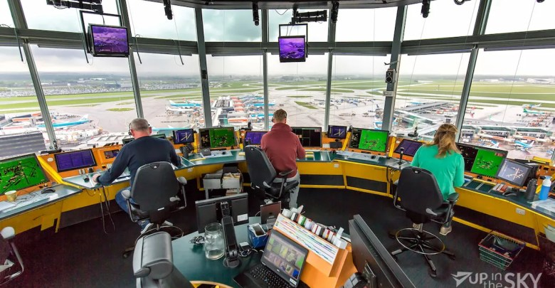
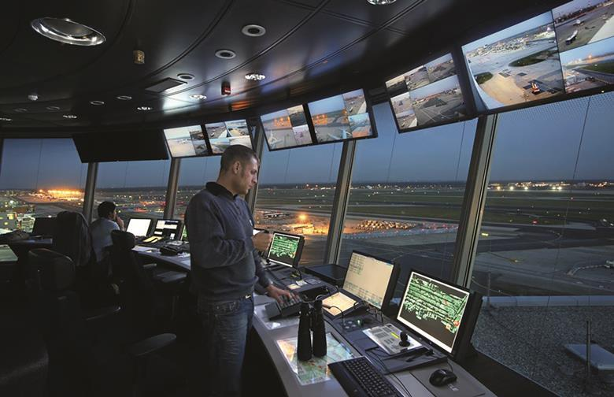
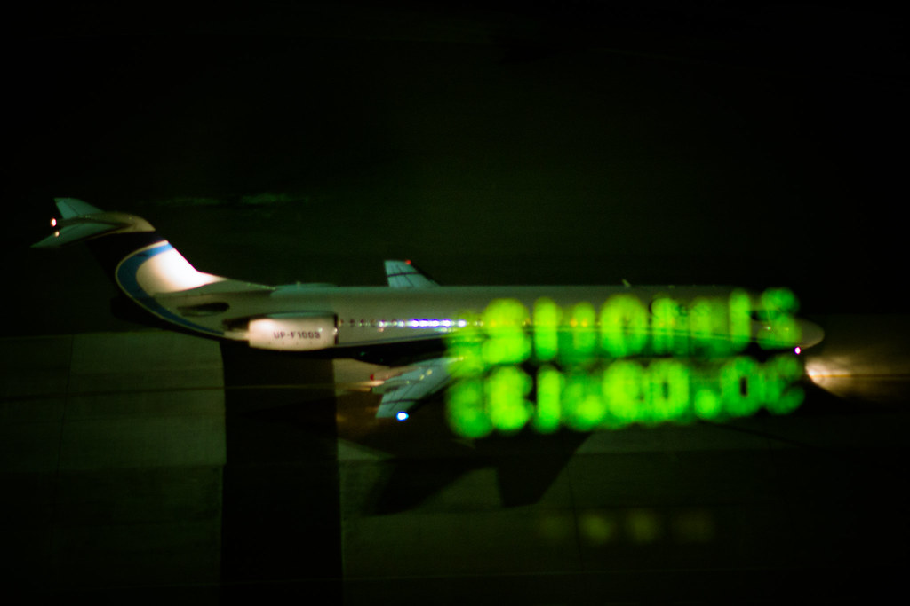
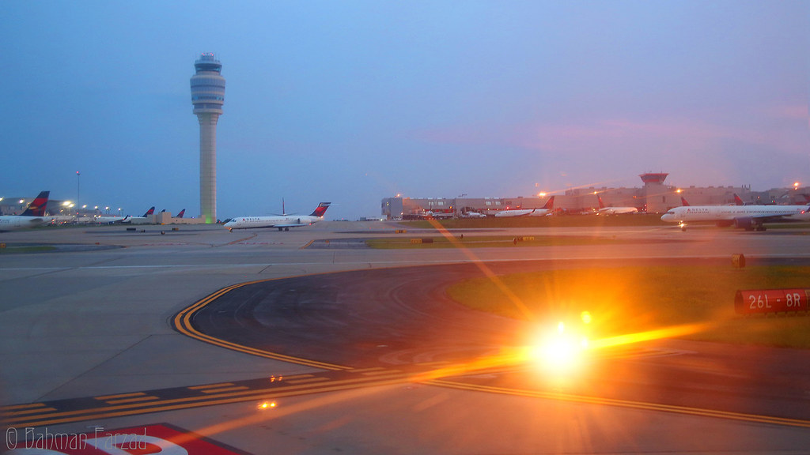
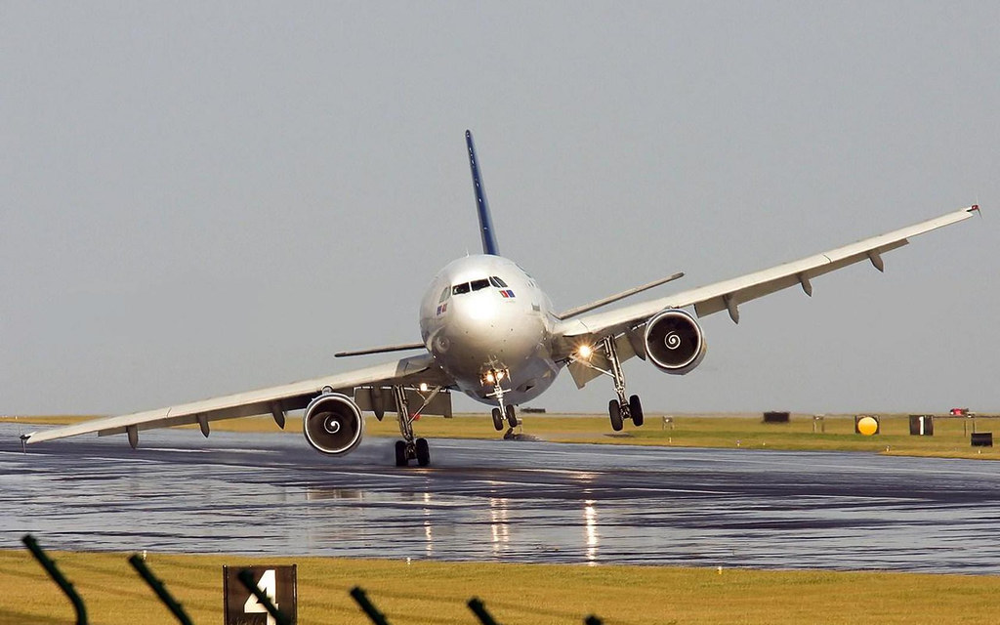
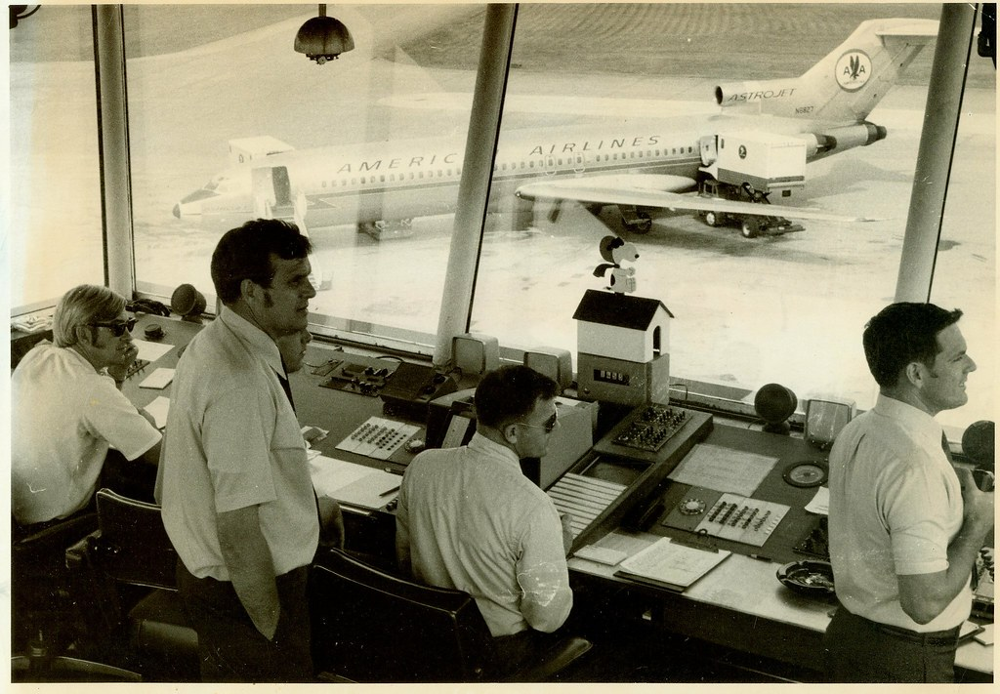
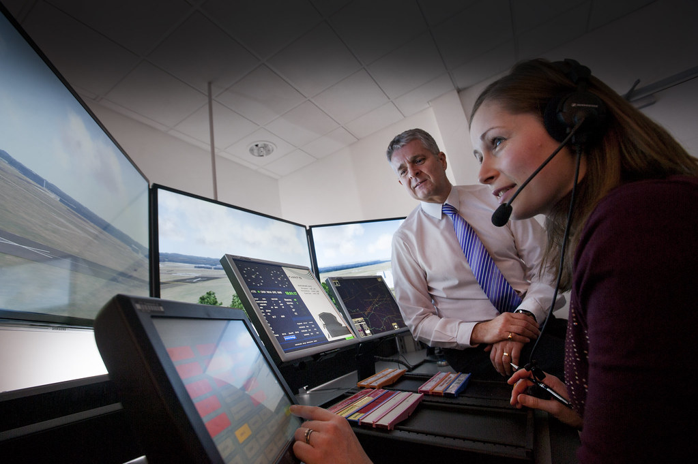
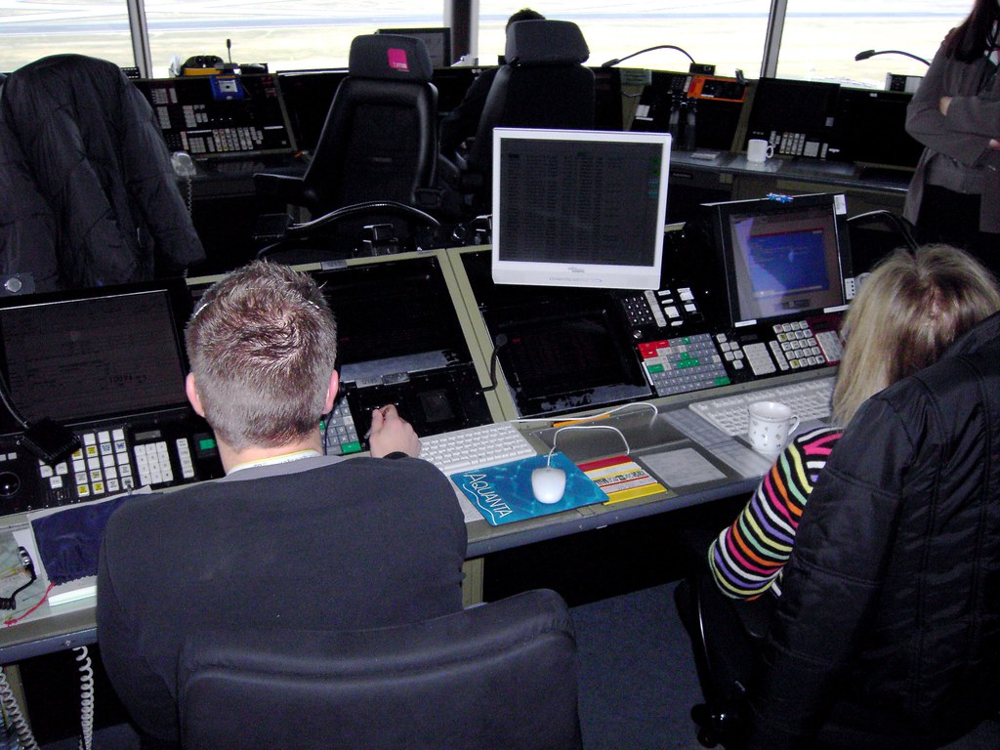
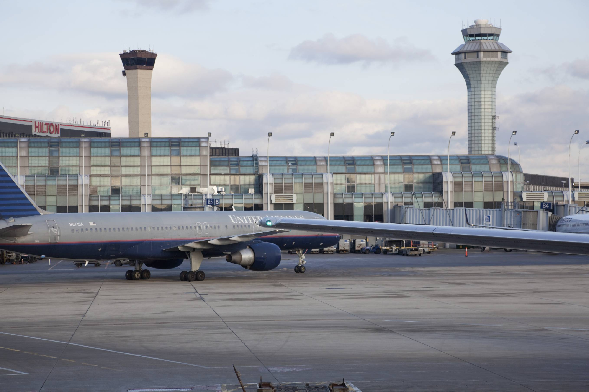
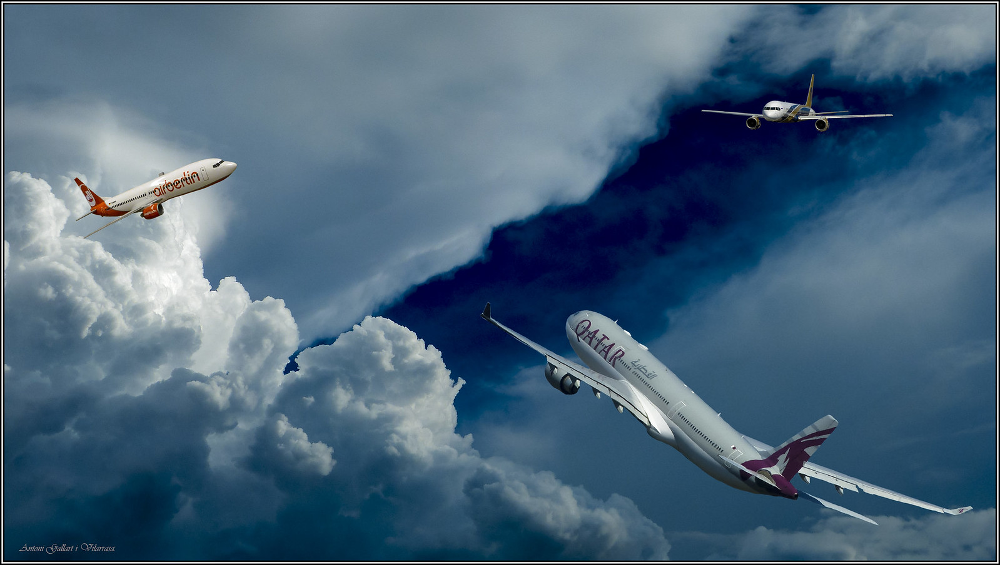

15 фактов об одной из самых ответственных профессий в мире – авиадиспетчер
Знаете ли вы, что без авиадиспетчеров пилотам пришлось бы летать в прямом смысле вслепую? Без сложной наземной системы диспетчеров путь в небо человеку заказан. Вот как работают диспетчеры:
15 интересных фактов об управлении воздушными судами, в простонародье называемыми самолетами.
Авиадиспетчер и диспетчер по наземному управлению самолетом – это разные профессии
Людей, которые управляют движением на взлетно-посадочной полосе (ВПП), называют «диспетчерами по рулежке», или на профессиональном сленге «наземный контроль». Авиадиспетчеры выполняют другую работу.
Согласно международной авиационной литературе, авиадиспетчер отвечает за осуществление безопасного, регулярного и быстрого движения воздушных судов в воздушном пространстве страны. Например, авиадиспетчеры направляют самолеты , чтобы последние держались на безопасном расстоянии друг от друга, помогают скоординировать действия экипажа воздушного судна в непогоду и выставляют эшелоны передвижения.
Не все авиадиспетчеры работают на вышке
«Башни авиадиспетчерской службы обычно являются наиболее заметной частью нашего рабочего места. Но персонал, работающий на смотровой площадке в башне, контролирует лишь зону аэропорта (визуально) и воздушное пространство подлета вокруг аэропорта. Воздушное же движение на эшелоне, между крупными аэропортами осуществляется диспетчерами, которые сидят в маленьких темных узких комнатах, смотря на экран радара».:
Сотрудники башни выполняют свои обязанности, визуально отслеживая обстановку
Авиадиспетчеры, находящиеся на смотровой площадке, напротив, в основном отслеживают происходящее визуально.
Два голландских работника диспетчерской службы из авиакомпании KLM Airlines описывают следующее:
«Значит, так, мы сидим там и часто смотрим в окно. Фактически, когда мы видим происходящее своими глазами, мы можем контролировать гораздо больший трафик, чем используя технологии. Другими словами, в плохих погодных условиях работа диспетчеров становится затруднительной и поэтому наши рейсы испытывают небольшие задержки».
Работать сверхурочно и под большим психологическим прессингом – это нормально для диспетчера
Стрессоустойчивость – как билет на работу
Да, ответственность диспетчеров просто невероятная. От их скоординированных действий зависят жизни сотен, тысяч человек. Стрессы здесь нешуточные! Лишь единицы смогут выдержать такой прессинг и не сломаться морально. Они остаются в профессии – остальным там не место.
Зарплата высокая, профессиональные льготы, отпуска
В США ежегодная зарплата авиадиспетчера в 2016 году составляла 128000$. Таким образом, в месяц у них получают чуть более 10 500 долларов США – серьезно выше, чем средняя зарплата по стране.
У нас в среднем по стране диспетчеры авиационных линий получают 120-130 тыс. рублей ежемесячно, что также является высоким результатом . По-другому и быть не может – за риски нужно платить людям вдвойне.
Крайне важно делать перерывы в работе каждые 75-90 минут на 20 или 40 минут
Одна из самых сложных задач по управлению воздушным движением – это процесс набора персонала
могут пройти месяцы или годы от заявки до допуска профессионала к управлению реальными полетами.
В Украине авиадиспетчеров учат в специализированном высшем учебном заведении
Льотна академія Національного авіаційного університету
В некоторых странах для того, чтобы стать диспетчером, предусмотрен возрастной ценз
Соискателю на место должно быть не менее 30 лет.
У диспетчеров существует свой язык
Диспетчеры говорят на другом языке, собственно профессиональном сленге, в основе которого лежит международный английский, а также множество жаргонных выражений, из которых могут состоять целые предложения. Понять человеку «с улицы» их категорически невозможно.
Несмотря на то что данный вид деятельности признан в любой стране чрезвычайно стрессовым, официально диспетчерам запрещается ругаться в эфире и на рабочем месте
Диспетчеры не ответственны за задержки рейсов
Поскольку задержки из-за погодных или любых других условий продиктованы объективными факторами, для противодействия которым, в том числе, и посажен диспетчер, винить его в умышленной задержке рейса никто не будет.
Видят ли диспетчеры НЛО?
Говорят, что видят! Например, в одну из ночей в марте 2004 года несколько авиадиспетчеров в аэропорту Канады заявили, что видели неопознанный летающий объект, который не был виден на радарах. Совсем недавно в США, штат Орегон, также заявили, что видели несущийся на огромной скорости неопознанный летающий объект, скрывшийся затем из поля их зрения
Подвидов авиадиспетчеров много:
- Диспетчер руления
- Диспетчер старта и посадки
- Диспетчер круга
- Диспетчер подхода
- Диспетчер районного центра
- Диспетчер пункта местных воздушных линий
- Диспетчер местного диспетчерского пункта
- А также диспетчер аэродромного диспетчерского пункта